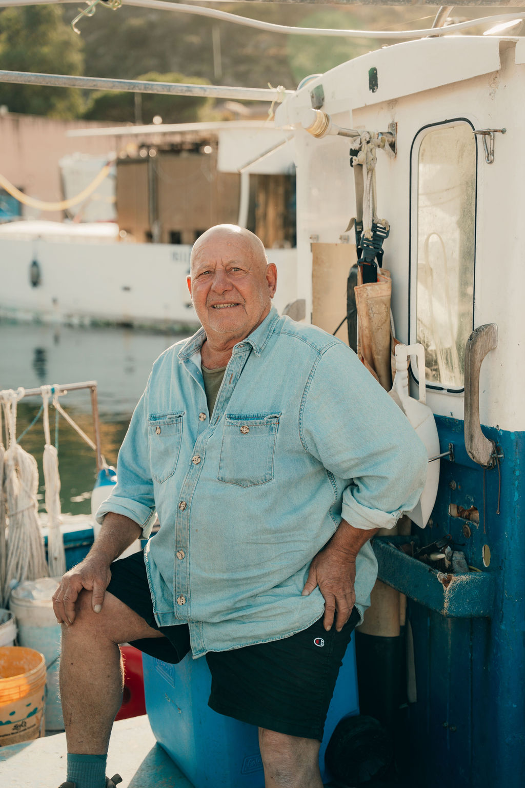

Isola · ToscanaCapraia, in sintesi
Un'isola del Tirreno, una comunità piccola che è il territorio stesso. Da Capraia siamo partiti con una mappatura serrata: ogni angolo del porto, ogni sentiero, ogni operatore raccontato in un'unica base ordinata.
Capitolo 01Il contesto
Capraia è un'isola dove la comunità coincide con il territorio. Pochi residenti, una rete densa di operatori — albergatori, pescatori, guide, ristoratori — e un patrimonio diffuso fatto di sentieri, scorci, ritmi quotidiani e stagioni.
Il problema, come in molti territori, non era la mancanza di contenuti. Era la frammentazione: foto su tre WhatsApp, materiali dei B&B sparsi, eventi raccontati una volta sola.
Capraia, prima, viveva in dieci cartelle diverse. Oggi è una base sola.
Capitolo 02Cosa abbiamo fatto
Abbiamo costruito il primo nucleo digitale dell'isola: 42 luoghi schedati, 18 persone raccontate, 26 eventi e ritmi messi a calendario. Tutto in un sistema unico, consultabile sull'app traveler Hearth e attivabile dal Comune via backoffice.
- Mappatura completa di sentieri, porti, scorci e punti identitari
- Racconto editoriale di pescatori, custodi, guide e operatori locali
- Calendario dei ritmi locali (rientro barche, mercati, stagioni)
- QR territoriali in 8 punti dell'isola
- Modulo web embeddabile per il sito del Comune

Output principaliI numeri del caso
Il primo nucleo digitale di Capraia è ora attivo. Nei tre anni successivi viene aggiornato attraverso il backoffice del Comune, mantenendo standard editoriale e copertura coerente.